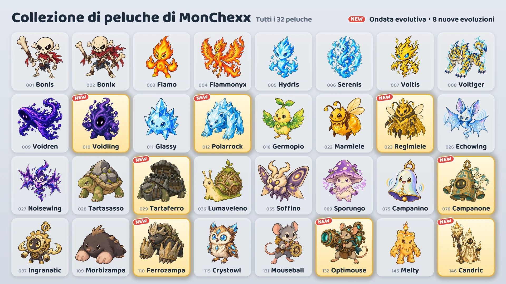

Stagione 1 · Aggiornamento 02: Ondata evolutiva
Il 16 ottobre vengono aggiunte otto nuove evoluzioni.

Otto nuove evoluzioni
- Voidling: si evolve da Voidren · Difensore
- Polarrock: si evolve da Glassy · Difensore / Combattente
- Regimiele: si evolve da Marmiele · Supporto / Tiratore
- Tartaferro: si evolve da Tartasasso · Difensore
- Campanone: si evolve da Campanino · Difensore / Supporto
- Ferrozampa: si evolve da Morbizampa · Difensore / Assassino
- Optimouse: si evolve da Mouseball · Tiratore
- Candric: si evolve da Melty · Supporto / Tiratore
Come ottenerle
- Pesca peluche (evento): Durante l'evento (dal 16 al 24 ottobre), tutte le macchine, tranne le due alle estremità della fila, contengono una delle nuove evoluzioni insieme ad altri due peluche. Al termine dell'evento, le nuove evoluzioni compariranno con la stessa frequenza degli altri peluche.
- Scambio peluche: Puoi scambiare 10 peluche doppioni con il peluche che scegli (Scambio a scelta) oppure 3 con un peluche casuale (Scambio casuale).
- Pacchetti di peluche: Anche le nuove evoluzioni possono uscire dai pacchetti di peluche.
Uso dei peluche evoluti
- Un peluche evoluto si colleziona a parte, e puoi inserirlo nella tua squadra appena lo ottieni.
- In «Crea la tua squadra», seleziona un peluche e tocca Base o Evoluzione per cambiarne la forma.
- Una squadra può avere un solo peluche per ogni linea evolutiva.
- Un peluche evoluto sale di livello separatamente dal peluche base.
Nuovi peluche
I valori «dell'attacco», «del potere magico» o «della salute massima» aumentano quando il peluche sale di livello.
Voidling · Difensore · Gittata 1
- Assorbimento del Vuoto: La salute massima aumenta di un valore pari al 560% del potere magico + 6% della salute massima a inizio battaglia, e Voidling recupera altrettanta salute. Poi infligge a tutti i nemici entro 1 casella danni magici pari al 10% della propria salute attuale. L'aumento di salute massima dura fino alla fine della battaglia.
- Banchetto del Vuoto: Ottiene 10 mana ogni volta che un nemico entro 4 caselle usa un'abilità attiva.
Polarrock · Difensore/Combattente · Gittata 1
- Schianto di Gelo: Infligge danni fisici pari all'820% dell'attacco al bersaglio attuale e al 385% ai nemici entro 1 casella da esso, e applica Gelo (−15% di velocità d'attacco per 8 secondi). Quando il Gelo si cumula 3 volte sul bersaglio attuale, gli applica Congelamento per 1,5 secondi, durante i quali non può agire né ottenere mana.
- Pelle di Cristallo: I danni magici subiti sono ridotti del 20%. Vale anche per i danni magici nel tempo.
Regimiele · Supporto/Tiratore · Gittata 3
- Pappa Reale: Ripristina a tutte le api operaie salute pari al 100% della loro salute massima e conferisce loro +200% di velocità d'attacco per 3 secondi. Se ha meno di 3 api operaie, ne evoca 1 in più.
- Sciame Operaio: Ha fino a 3 api operaie. Le loro statistiche seguono il livello di Regimiele, e ogni ape subisce ogni secondo danni pari al 4% della propria salute massima. Quando Regimiele cade, le api diventano furiose e infliggono e subiscono il doppio dei danni.
Tartaferro · Difensore · Gittata 1
- Raffica Rotante: Ruota sul posto in senso antiorario e spara con il cannone 6 volte. Ogni colpo infligge danni fisici pari al 1540% dell'attacco al primo nemico entro 2 caselle in quella direzione. Mentre spara non si muove e non ottiene mana, e si ferma in caso di Stordimento o Congelamento.
- Guscio Fortezza: Per ogni nemico entro 1 casella, ottiene +35 di armatura e +35 di resistenza magica.
Campanone · Difensore/Supporto · Gittata 1
- Gran Rintocco: Infligge danni magici pari al 555% del potere magico a tutti i nemici entro 2 caselle e applica loro Provocazione per 2 secondi. Nel frattempo, il 35% dei danni di ogni attacco base nemico che subisce (prima delle riduzioni) viene restituito come danni magici a tutti i nemici entro 2 caselle.
- Risonanza: Ripristina salute pari al 120% del potere magico ogni volta che un altro alleato entro 2 caselle usa un'abilità attiva.
Ferrozampa · Difensore/Assassino · Gittata 1
- Assalto Sotterraneo: Rimuove tutti i propri indebolimenti, si interra e raggiunge la casella vuota con più nemici intorno, poi infligge danni fisici pari al 740% dell'attacco a tutti i nemici entro 1 casella. Non può essere attaccato mentre si sposta.
- Artigli di Roccia: L'armatura aumenta di un valore pari al 50% dell'attacco.
- Inizia la battaglia con 0 mana.
Optimouse · Tiratore · Gittata 4
- Cannone Laser: Carica per 1,5 secondi, poi spara verso il bersaglio attuale un laser largo 1 casella fino al bordo del campo, infliggendo danni magici pari al 1210% dell'attacco a tutti i nemici colpiti. Il colpo viene annullato in caso di Stordimento o Congelamento durante la carica.
- Circuito di Preriscaldo: Ogni attacco base aumenta la velocità d'attacco del 15%, fino al 100%. Usare l'abilità attiva azzera l'aumento.
Candric · Supporto/Tiratore · Gittata 3
- Fiamma Eterna: Conferisce per 5 secondi un marchio e uno scudo pari al 375% del potere magico all'alleato con meno salute (escluso sé stesso). Se dei danni diretti dovessero sconfiggere l'alleato marchiato, Candric subisce al suo posto il 200% di quei danni.
- Cera Colante: I danni diretti che Candric subisce vengono tolti dalla sua salute nell'arco di 4 secondi.
Partite classificate e badge
- Anche gli avversari delle partite classificate usano le nuove evoluzioni.
- Le otto nuove evoluzioni non contano per il badge «Collezione Stagione 1».
- Il badge «Prof delle evoluzioni» si ottiene possedendo 5 peluche evoluti diversi. Ora i peluche evoluti sono 13.
Puoi consultare le modifiche al bilanciamento di tutti i peluche nelle note sulla patch «Bilanciamento e sistema di battaglia».